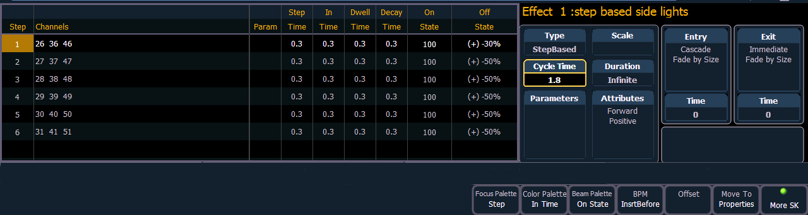

In step effects, each step contains an on-state and an off-state. The on-state is the action the channels in the step should take when the step is active. The off -state is the action the channels in the step should take when the step is not active. Step effects are a quick and easy way to build simple chases.
When building step effects, channels must be defined for each step. This is different from absolute and relative effects.
Once complete, you may play back the effect on all channels embedded in it by pressing [Recall From] [Effect] [x] [Enter]. Or you may specify only certain channels to play back from the embedded channel list.
A step effect is displayed in a chart with the following columns:
All times are entered from the keypad in minutes and seconds, tenths and hundredths.
Here is an example of a step effect when viewed in the CIA:

If an effect step is on the command line or indicated in the blue text to the left of the command line, entering a number on the command line will default to selecting a step for the current selected effect.
If no step is displayed, the command line will default to an effect number.